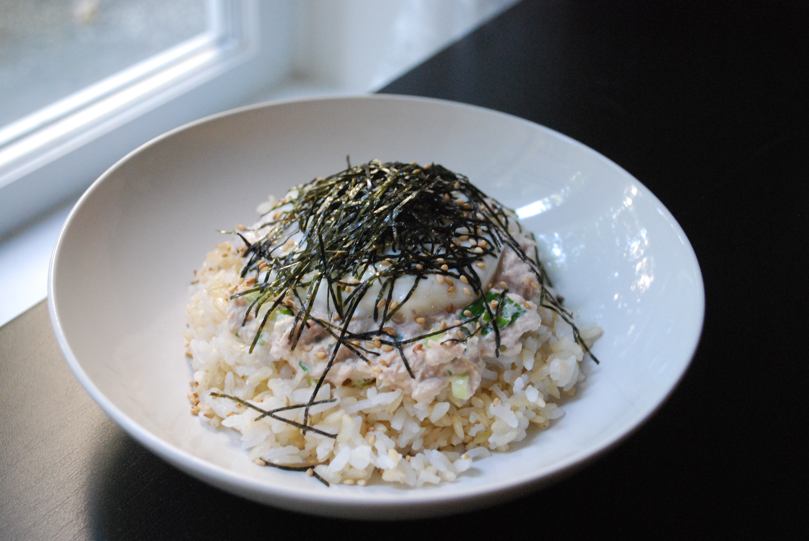

Featured Recipe : Tuna Mayo Rice Bowl
A delcious simple meal that takes less than 10 minutes to start off your day! (click image to go to recipie page)
A delcious simple meal that takes less than 10 minutes to start off your day! (click image to go to recipie page)